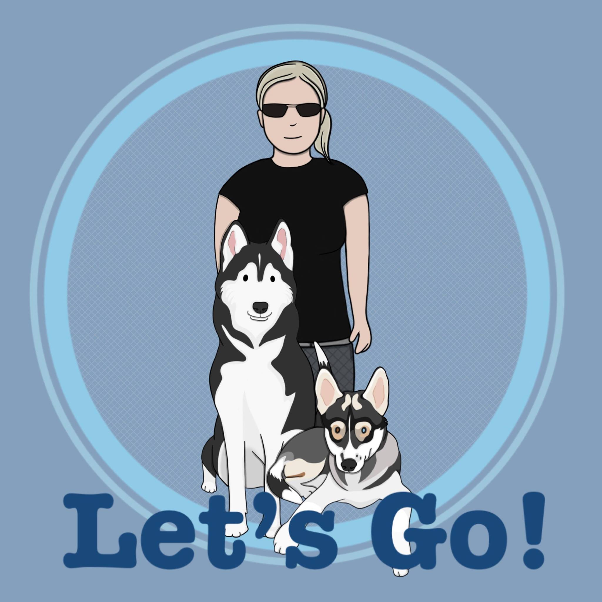

1 hour Dog Walk £12 - One hour of walking the local area. The walk will consist of enrichment exercises, cuddles and treats. If you wish for training to be added to walk then these needs can be discussed. Depending on what is required, the cost may be a little more per hour. A GPS map will be provided of your dogs walk, as well as photos. I provide a single household service. Please add an extra £4 per dog. All dogs are welcome. I am not deterred by behavioural issues or the size of any dog. Most behavioural issues we can work on together. I am not qualified to diagnose or treat dogs with aggression issues.
Dog Walking and Training Service 30 Minutes £6.00 - Half hour of walking in the local area. The walk will consist of enrichment exercises, cuddles and treats. If you wish for training to be added to the walk then these needs can be discussed. Depending on what is required, the cost may be a little more per hour. A GPS map will be provided of your dogs walk, as well as photos.
"Kelly is amazing and wonderful with my two dogs. Trust her totally with them. She even helps them write letters to me when I’m away. Can’t praise her enough!"
"Absolutely amazing lady that is outstanding in dog care . And knows sled dog bleed well . And all other breeds excellent with . I have seen her love and attention to her own two wonderful husky’s and seen her caring ways when I have attended the day care to all breeds of dog in her care . I would trust her with my dog 100%"
Click the below Facebook link to get in touch!